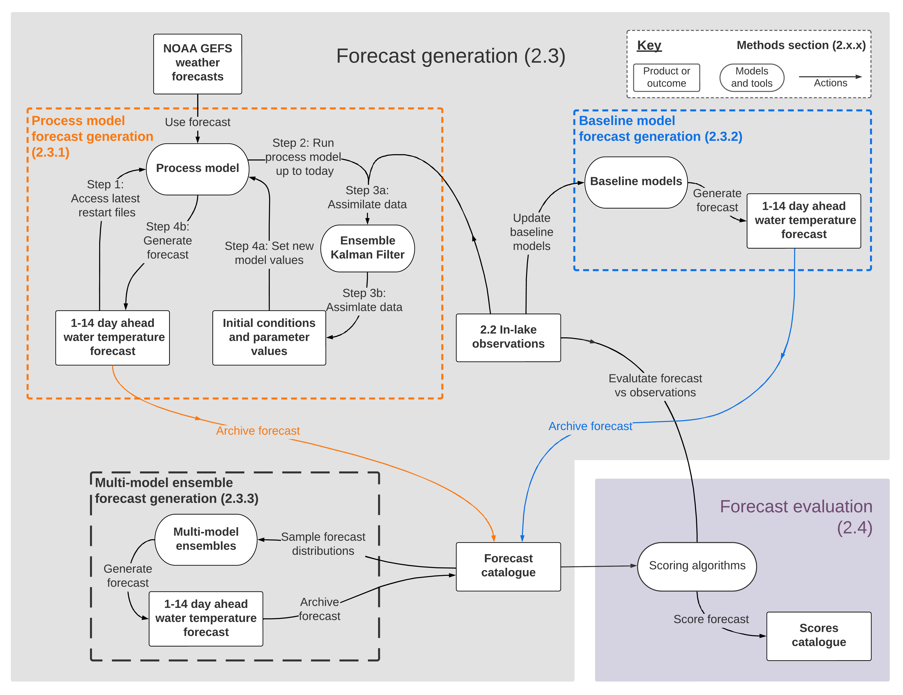
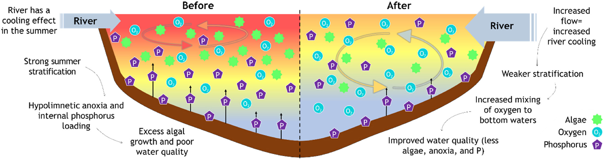

Publications
Journal articles
Olsson, F., Carey, C. C., Boettiger, C., Harrison, G., Ladwig, R., Lapeyrolerie, M., Lewis, A. S. L., Lofton, M. E., Montetealegre-Mora, F., Rabaey, J. S., Robbins, C. J., Yang, X., Thomas, R. Q. 2024. What can we learn from 100,000 freshwater forecasts? A synthesis from the NEON Ecological Forecasting Challenge. ESS Open Archive Preprint. https://doi.org/10.22541/essoar.171458144.44104603/v1
Olsson, F., Mackay, E. B., Spears, B. M., Barker, P., & Jones, I. D., 2024. Interacting impacts of hydrological changes and air temperature warming on lake temperatures highlight the potential for adaptive management. Ambio. https://doi.org/10.1007/s13280-024-02015-6

Howard, D. W., Bentrup, J. A., Richardson, D. C., Lewis, A. S. L., Olsson, F., & Carey, C. C., 2024. Variability in ice cover does not affect annual metabolism estimates in a small eutrophic reservoir. J. Geophys. Res.-Biogeo, 129, e2024JG008057., https://doi.org/10.1029/2024JG008057
Lewis, A. S. L., Breef‐Pilz, A., Howard, D. W., Lofton, M. E., Olsson, F., Wander, H. L., et al, 2024. Reservoir Drawdown Highlights the Emergent Effects of Water Level Change on Reservoir Physics, Chemistry, and Biology. J. Geophys. Res.-Biogeo, 129(2). https://doi.org/10.1029/2023JG007780
Thomas, R.Q., C. Boettiger, C.C. Carey, M.C. Dietze, L.R. Johnson, M.A. Kenney, J.S. Mclachlan, J.A. Peters, E.R. Sokol, J.F. Weltzin, A. Willson, W.M. Woelmer, and Challenge Contributors, 2023. The NEON Ecological Forecasting Challenge. Frontiers in Ecology and the Environment, 21(3), 112–113. https://doi.org/10.1002/fee.2616
Olsson, F., Mackay, E.B., Barker, P., Davies, S., Hall, R., Spears, B., Exley, G., Thackeray, S.J., Jones, I.D., 2022. Can reductions in water residence time be used to disrupt seasonal stratification and control internal loading in a eutrophic monomictic lake? J. Environ. Manage. https://doi.org/10.1016/j.jenvman.2021.114169

Olsson, F., Mackay, E.B., Moore, T., Barker, P., Davies, S., Hall, R., Spears, B., Jones, I.D., 2022. Annual water residence time effects on thermal structure: A potential lake restoration measure? J. Environ. Manage. 314. https://doi.org/10.1016/j.jenvman.2022.115082
Moore, T., Mesman, J., Ladwig, R., Feldbauer, J., Olsson, F., Pilla, R.M., Shatwell, T., Venkiteswaran, J.J., Delany, A.D., Dugan, H., Rose, K.C., Read, J.S., 2021. LakeEnsemblR: An R package that facilitates ensemble modelling of lakes. Environ. Model. Softw. https://doi.org/10.1016/j.envsoft.2021.105101
Gray, E., Mackay, E. B., Olsson, F., Jones, I. D. Storm events can counteract atypically high thermal stability induced by climate warming in lakes. In prep.
Data, code, and software
Olsson, F., Mackay, E. B., Spears, B. M., Barker, P., & Jones, I. D., 2024. Interacting impacts of hydrological changes and climate warming on lake temperatures highlight the potential for adaptive management: Model output [dataset]. Zenodo. https://doi.org/10.5281/zenodo.10309370
Olsson, F., Mackay, E. B., & Jones, I. D., 2024. OlssonF/Ambio_adaptive_management: Interacting impacts of hydrological changes and air temperature warming on lake temperatures highlight the potential for adaptive management (v1.1.0). Zenodo. https://doi.org/10.5281/zenodo.11193716
Olsson, F., Moore, T., Carey, C. C., Breef-Pilz, A., & Thomas, R. Q., 2023. OlssonF/FCRE-forecast-code: A multi-model ensemble of baseline and process-based models improves the predictive skill of near-term lake forecasts: code (v1.0.0). Zenodo. https://doi.org/10.5281/ZENODO.8172783
Olsson, F., Moore, T., Carey, C. C., Breef-Pilz, A., & Thomas, R. Q., 2023. A multi-model ensemble of baseline and process-based models improves the predictive skill of near-term lake forecasts: data, forecasts, and scores [dataset]. Zenodo. https://doi.org/10.5281/ZENODO.8136961
Olsson, F., Mackay, E. M., Jones, I. D., Barker, P., & Spears, B., 2022. Elterwater inner basin: Physical, ecological and chemical lake measurements, 2018-19 [dataset]. NERC EDS Environmental Information Data Centre. https://doi.org/10.5285/37F17F6C-66F6-454C-BD52-7C601EF20CA2
Olsson, F., Mackay, E.B., Jones, I.D., Barker, P., Spears, B., 2022. Elterwater inner basin: Estimated inflow discharge and water temperature, 2012-2019 [dataset]. NERC EDS Environmental Information Data Centre. https://doi.org/10.5285/2883aaf1-6148-49cb-904a-d271a028c716
Tutorials
Olsson, F., Boettiger, C., Carey, C. C. Lofton, M. E. Thomas, R. Q., 2023. OlssonF/NEON-forecast-challenge-workshop: EFI NEON Forecast Challenge Workshop (v1.0.0). Zenodo. https://doi.org/10.5281/zenodo.8316966
Virginia Ecoforecast Reservoir Analysis Forecasting Challenge introductory tutorial video series: